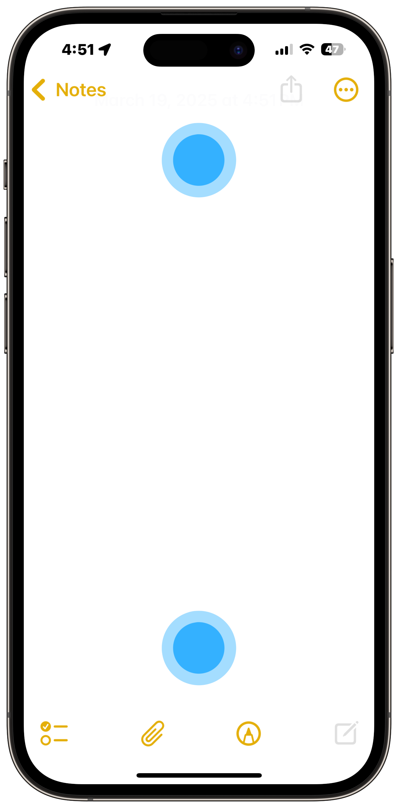
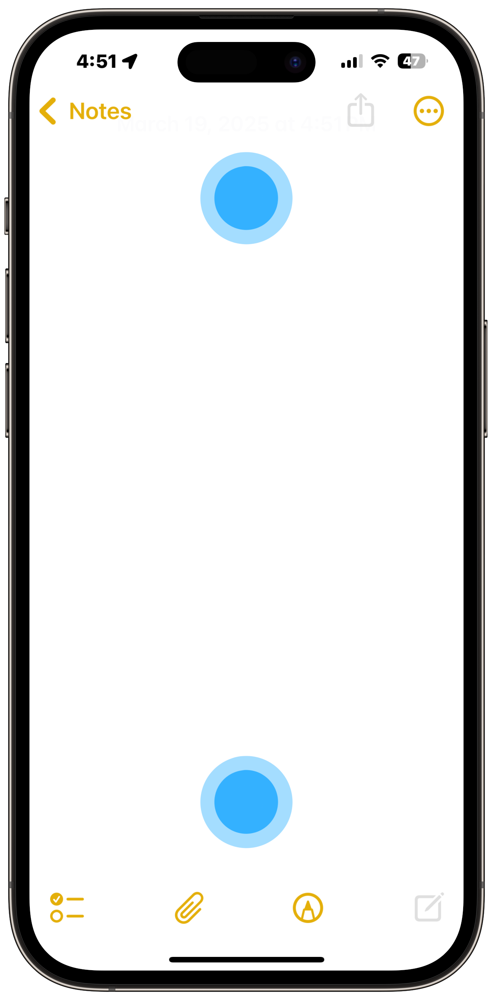

Braille Screen Input for iPhone, iPad, and iPod touch with VoiceOver
Learn how to type using Braille chords on an iPhone, iPad, or iPod touch for easier and faster typing as a blind or visually impaired person.
Enter and Exit Braille Screen Input
You can enter Braille Screen Input mode in various ways depending on your device's operating system version.
Enter and Exit with Rotor
To access Braille Screen Input with the rotor, first add it to the rotor in Settings by following this guide: The Rotor for VoiceOver >
Once added, follow the below instructions to enter and exit Braille Screen Input.
- Enter Braille Screen Input: Rotate two fingers slightly clockwise or counter-clockwise as if turning a dial to move to the next or previous rotor item. Continue to move through the rotor items until you find Braille Screen Input.
- Exit Braille Screen Input (Rotor Items): Rotate two fingers clockwise or counter-clockwise to move to the next or previous rotor item, which will dismiss Braille Screen Input.
- Exit Braille Screen Input (Gesture): Perform a two-scrub.
Enter and Exit with Activation Gestures (iOS / iPadOS 18 or later)
iOS / iPadOS 18 brought new gestures you can use to easily enter and exit Braille Screen Input with without using the rotor.
- Enter Braille Screen Input: double-tap with two fingers near the top and bottom edges or on opposite sides of the screen.
- Exit Braille Screen Input: Slide two fingers in opposite directions.
 

Note that Braille Screen Input can only be used while VoiceOver is enabled.
Adjust Dot Positions
Braille Screen Input displays dots on the screen to correlate to the six dots of a braille cell. You can adjust the position of the dots with the following gestures for iPhone and iPad. VoiceOver will announce that the dots' positions have been recalibrated.
iPhone
On your iPhone while in Braille Screen Input mode, tap and release all three dots on the right or left side of the screen at the same time to calibrate the positioning of that side.
iPad
On your iPad while in Braille Screen Input mode, double-tap all dot positions at the same time with both hands to recalibrate.
Gestures
| Action | Gesture |
|---|---|
| Space | Swipe right with one finger |
| Delete Letter | Swipe left with one finger |
| Delete Word | Swipe left with two fingers |
| Return | Swipe right with two fingers |
| Submit | Swipe up with Three fingers |
| Word Suggestions | Swipe up or down with one finger |
| Cursor Mode | Swipe up or down with one finger while holding with one finger |
| Move Cursor | Swipe left or right with one finger while holding with one finger |
| Switch Mode (Text Input / Command Mode) | Swipe left or right with three fingers |
| Orientation Lock | Swipe down with three fingers |
| Select Text | Swipe left or right with two fingers while holding with one finger |
| Copy | Swipe up with two fingers |
| Paste | Swipe down with two fingers |
| Exit | Do any of the following:
|
Configure the Braille Screen Input Settings
You can adjust the settings for Braille Screen Input such as switching from six-dot uncontracted braille to - six-dot contracted, or reverse the dot positions for six-dot and eight-dot braille.
- Open Settings
- Tap Accessibility
- Tap VoiceOver
- Tap Braille
In here, you can adjust the braille tables, input types, gestures, and various other settings. You can also connect a braille display at the bottom using bluetooth. Note that you may not be able to properly connect a braille display via the normal Bluetooth page in Settings, you must connect it through this section in VoiceOver. Follow your braille display's instructions for more details.
Command Mode
Command Mode allows you to navigate and use your phone all with the use of Brialle chords in Braille Screen Input or with a Braille Display.
| Action | Braille Chord |
|---|---|
| Next Item | Dot 4 |
| Previous Item | Dot 1 |
| Activate Selected Item | Dots 3 6 |
| Hold Selected Item | Dots 3 5 6 |
| Go Home | Letter H |
| App Switcher | Letter H 2x |
| Status Bar | Letter S |
| Control Center | Dots 2 5 |
| Notification Center | Dots 4 6 |
| Item Chooser | Letter I |
| Scroll Up | 3 4 5 6 |
| Scroll Down | 1 4 5 6 |
| Scroll Right | Letter O |
| Scroll Left | Dots 1 3 5 |
| Go to First Item | Dots 1 2 3 |
| Go to Last Item | Dots 4 5 6 |
| Escape | Letter B |
| Screen Curtain | Dots 1 2 3 4 5 6 |
| Volume | Up: Dots 3 4 5 Down: Dots 1 2 6 |
| Magic Tap | Dots 1 5 6 |
| Mute Speech | Letter M |
| Select All | Dots 2 3 5 6 |
| Select Left | Dots 2 3 5 |
| Select Right | Dots 2 5 6 |
| Copy | Letter C |
| Cut | Letter X |
| Paste | Letter V |
| Search Text | Letter F |
| Dictation | 1 5 6 |
Seee the list I referenced to create this table of Braille Screen Input Command Mode Chords here: List of Commands for BSI in iOS 18 by Chris Chaffin - AppleVis
Last updated: March 19, 2025
Reference the original support article by Apple here: Type Braille Directly on Your iPhone, iPad, and iPod touch - Apple Support
All references to Apple Inc. and their products and services are trade-marked and are used in these articles for educational purposes.